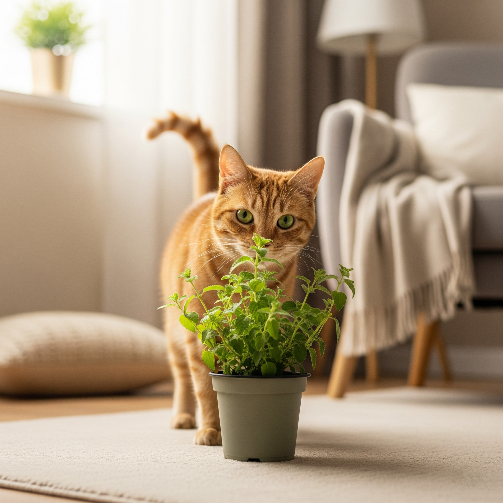

Meu Gato Comeu uma Planta: O que Fazer?
Quem convive com gatos sabe o quanto eles são curiosos. Não é raro flagrar um gatinho mordiscando folhas ou flores pela casa. Mas o que fazer se o seu gato comeu uma planta e você não tem certeza se ela é segura? Este post é um guia rápido e objetivo para situações de emergência — com sintomas a observar, como agir e quando procurar o veterinário.
Nem sempre uma planta bonita e inofensiva para humanos é segura para os gatos. Muitas espécies comuns em jardins e decorações contêm substâncias que podem causar intoxicações nos felinos. Como os gatos metabolizam algumas toxinas de forma diferente, até pequenas quantidades podem gerar problemas sérios.
Sintomas comuns de intoxicação em gatos:
- Salivação excessiva
- Vômitos
- Diarreia
- Falta de apetite
- Fraqueza ou apatia
- Dificuldade para respirar
- Tremores ou convulsões
- Pupilas dilatadas
- Irritação na boca ou língua
Importante: Nem todos os sintomas aparecem de imediato — às vezes os sinais surgem após algumas horas.
O que fazer imediatamente (checklist de emergência):
| Ação | Descrição |
|---|---|
| 1️⃣ Retirar o acesso | Afaste o vaso ou folhas mastigadas |
| 2️⃣ Identificar a planta | Anote nome ou fotografe |
| 3️⃣ NÃO induzir vômito | Pode piorar o quadro |
| 4️⃣ NÃO dar leite ou carvão | Ineficazes e podem ser prejudiciais |
| 5️⃣ Observar sintomas | Anote qualquer sinal |
| 6️⃣ Procurar o veterinário | Leve o gato e uma amostra da planta |
Plantas de maior risco:
- Lírios (todas as variedades) — extremamente tóxicos, causam falência renal
- Comigo-ninguém-pode (Dieffenbachia spp.) — causa irritação oral intensa
- Antúrios (Anthurium spp.) — irritação oral e risco respiratório
- Costela-de-adão (Monstera deliciosa) — salivação e desconforto oral
- Espada-de-São-Jorge (Sansevieria spp.) — vômitos e diarreia
Prevenção: como evitar acidentes:
- Conheça as plantas da sua casa e remova as espécies tóxicas
- Consulte sempre nossa lista completa de plantas tóxicas para gatos
- Ofereça plantas seguras ou graminhas específicas para gatos para redirecionar o comportamento de mastigar
- Enriquecer o ambiente com brinquedos e estímulos ajuda a reduzir o interesse pelas plantas
Situações de emergência como essa geram pânico — mas informação e ação rápida fazem toda a diferença. Se seu gato comeu uma planta e você está em dúvida sobre a toxicidade, não hesite em procurar um veterinário.
E lembre-se: um ambiente verde e seguro é possível — basta escolher as espécies certas!
← Voltar para o blog